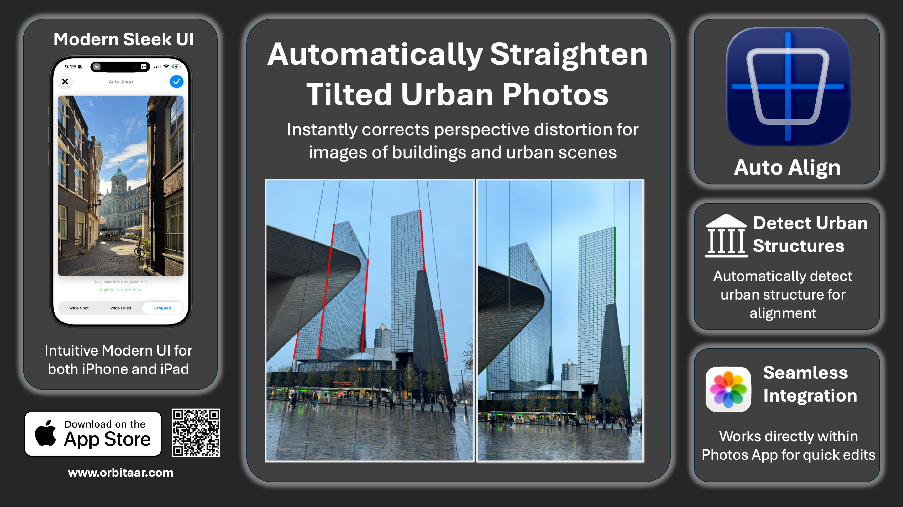

Auto Align
Experience effortless photo perfection. Instantly correct leaning buildings and wide-angle distortions with a single tap.
Experience effortless photo perfection. Instantly correct leaning buildings and wide-angle distortions with a single tap.

Auto Align delivers optimal results for urban photography with clear buildings, cityscapes, and architectural structures.
When your photo contains clear, straight lines and well-defined urban elements, the app can automatically detect distortions and correct them with a single tap—ideal for real estate, travel, and creative city photography.


When capturing tall buildings from ground level with a wide-angle lens, the camera records a broader scene. This extra information is compressed into the frame, often causing buildings to appear tilted. Auto Align intelligently corrects this distortion and fills in missing edge pixels by smoothly extending the edge colors, resulting in a natural-looking image.
Cropped correction gives you the choice to keep only the undistorted, known pixels in a rectangular image, or to retain all corrected pixels—including areas where missing information is filled. This lets you decide between a clean crop or a full correction, based on your preference.
Auto Align works best with city photos that have clear buildings and straight lines.
If your picture doesn't show obvious urban features, the app may not be able to fix it automatically.


Photos without clear city buildings or straight lines may not be suitable for automatic correction.
For our privacy policy and terms of use for Auto Align, please see the links below.
Privacy Policy Terms of Use